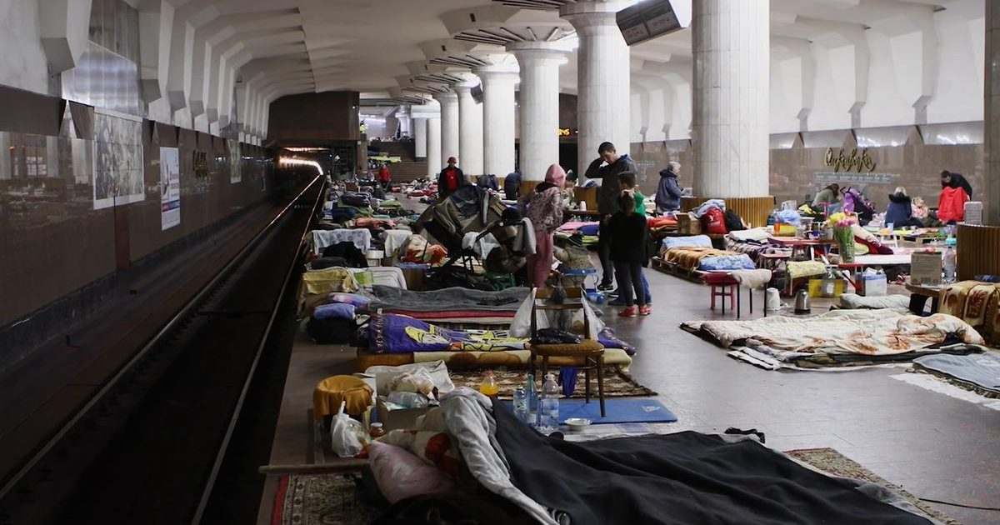

Когда он начал гореть
Ужасающее насилие, непрекращающийся террор и непрекращающаяся солидарность: четыре года войны глазами украинских гражданских лиц - Aeon VideoWatch на Aeon

Ужасающее насилие, непрекращающийся террор и непрекращающаяся солидарность: четыре года войны глазами украинских гражданских лиц - Aeon VideoWatch на Aeon